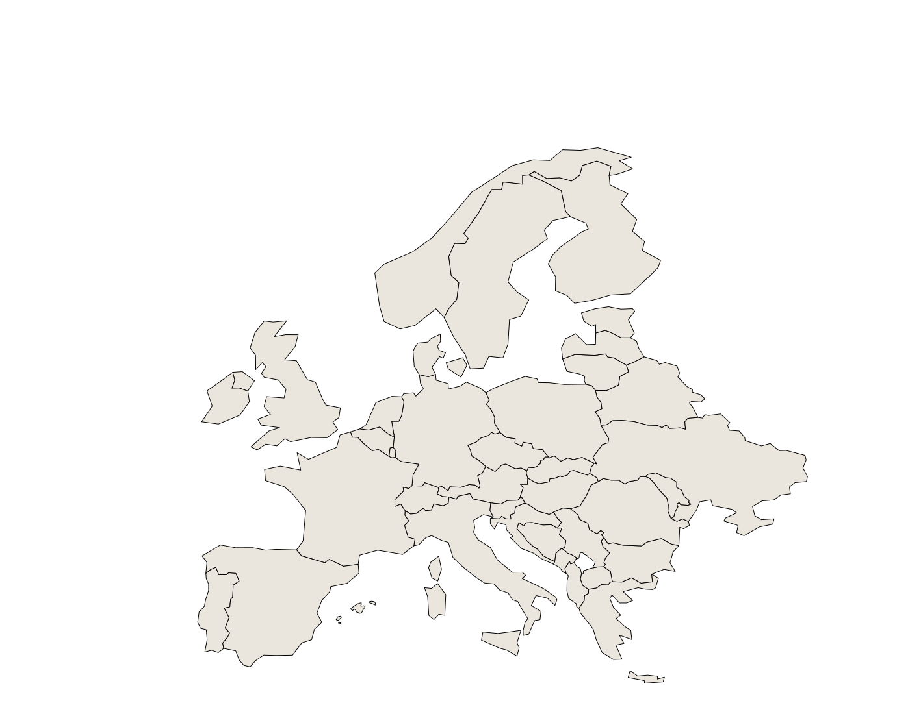
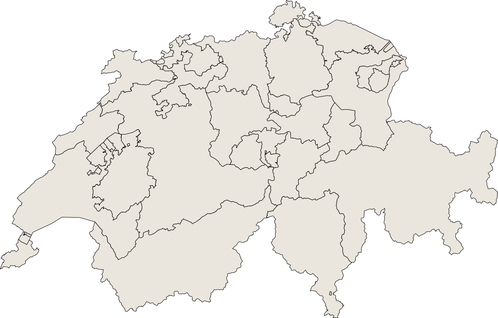
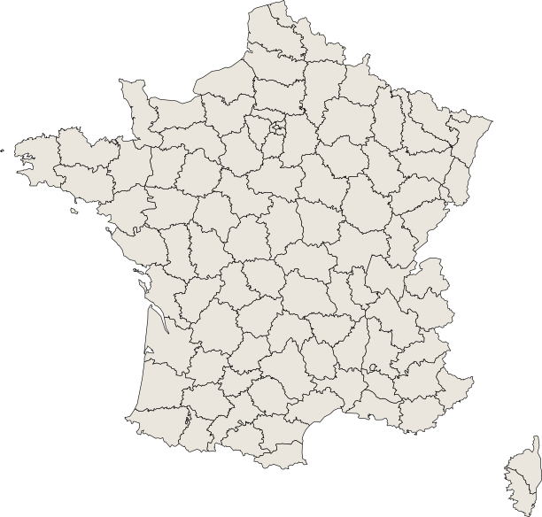
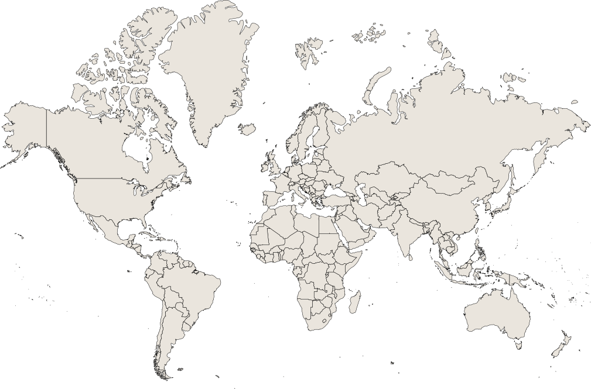

Bienvenue
Découvrez nos cartes interactives et explorez les régions avec des informations détaillées, des drapeaux et des données géographiques fascinantes.
Cartes Disponibles

Carte de l'Europe
Explorez les pays européens, leurs drapeaux et leurs caractéristiques géographiques.
- ✓ Les pays d'Europe
- ✓ Les drapeaux
- ✓ Les informations générales

Carte de la Suisse
Découvrez les cantons suisses avec leurs drapeaux, cultures et informations régionales.
- ✓ Tous les cantons
- ✓ Les drapeaux
- ✓ Les informations générales


En construction
Carte de la France
Découvrez les départements français de métropole avec leurs informations régionales.
- ✓ Départements de métropole
- ✓ Les drapeaux
- ✓ Les informations générales

En construction
Carte du monde
Explorez les continents et les pays avec des informations geographiques detaillees.
- ✓ Tous les continents
- ✓ Les drapeaux
- ✓ Les informations generales
Caractéristiques
Interactif
Cliquez sur les régions pour découvrir plus d'informations
Visuellement attrayant
Design moderne et facile à utiliser
Responsive
Fonctionne parfaitement sur tous les appareils
Données riches
Informations détaillées pour chaque région